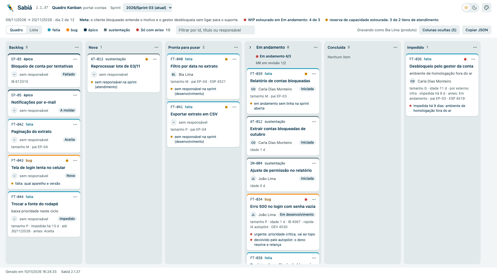
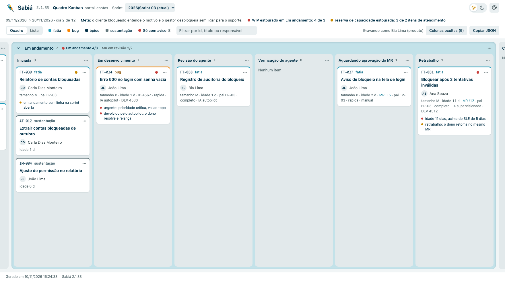
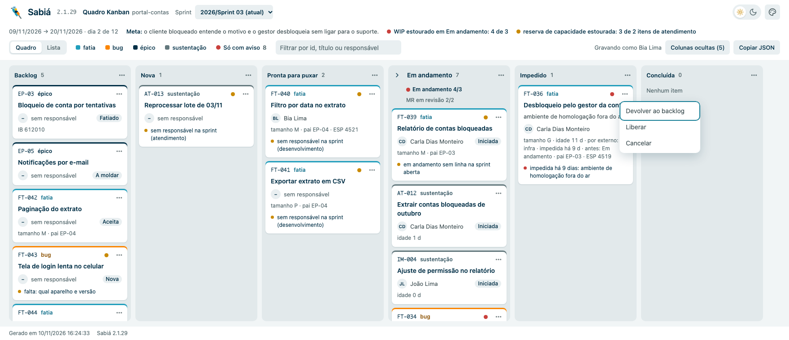
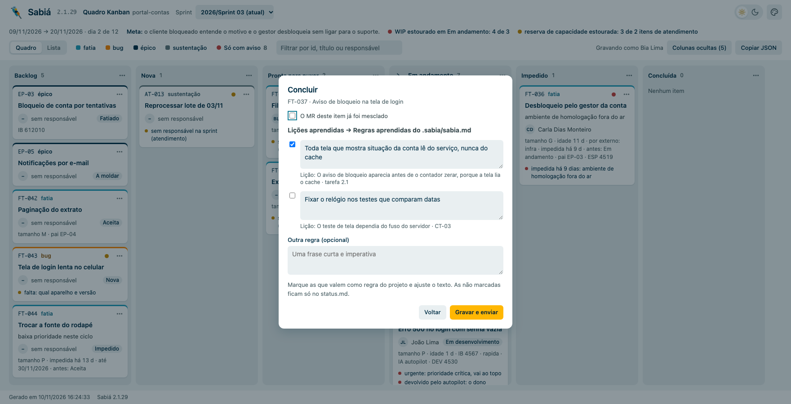
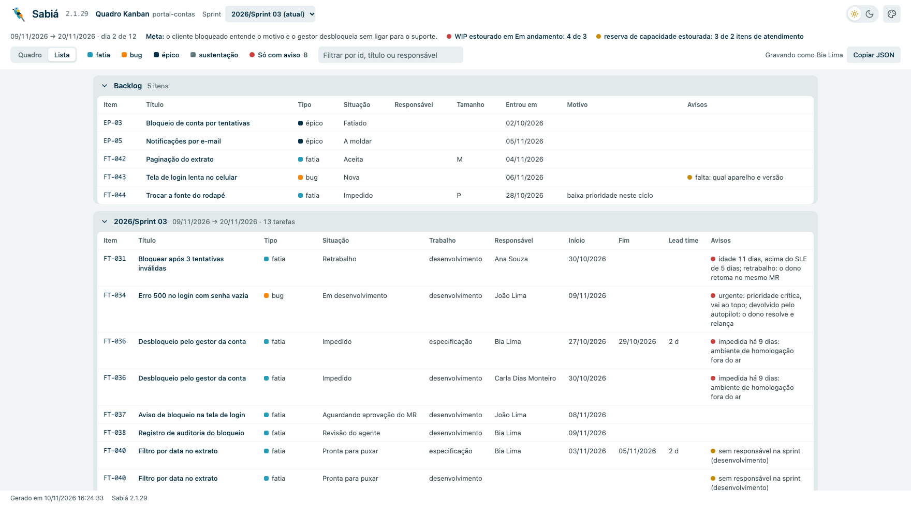
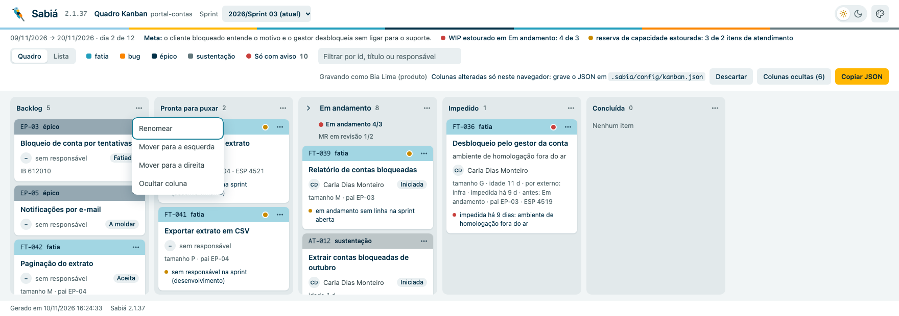
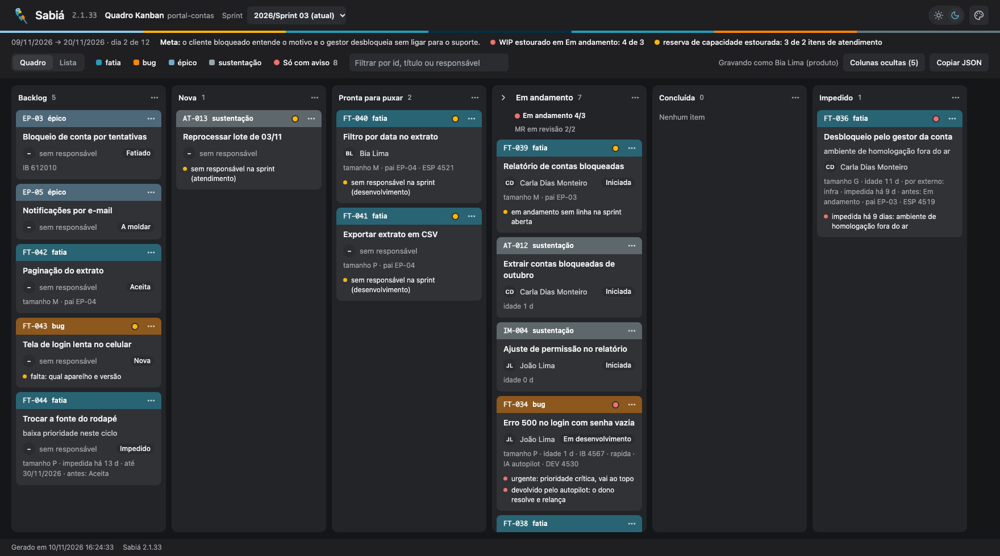

O sabia kanban abre o quadro do projeto no navegador. Ele desenha o mesmo estado que o sabia status devolve em JSON, lido do backlog.md, das sprints, dos acordos e do status.md de cada fatia: dá para acompanhar o dia a dia sem abrir os arquivos.
npx sabia kanban # na raiz do projeto; mostra o link e fica no ar npx sabia kanban --projeto ../outro # outro projeto npx sabia kanban --porta 5000 # padrão: 4780 (ocupada, usa uma livre)
O comando sobe um servidor local e escreve o link no terminal; é só clicar. Cada vez que a página carrega, ele lê o projeto de novo. Com Ctrl+C o servidor fecha e a página avisa que o quadro foi encerrado. Nada sai da máquina além do commit que você confirma.

backlog.md, o grupo Em andamento, Impedido, Concluída e Cancelada.equipe.json), tamanho, idade, MR, pai, IB e as tarefas do EWM.
status.md da fatia.O grupo recolhe e expande pela seta. Aberto, mostra onde cada item está: Iniciada (sem Fase ainda), Em desenvolvimento, Revisão do agente, Verificação do agente, Aguardando aprovação do MR e Retrabalho. No topo dele fica o WIP contra o limite do acordos.json.
A bolinha no card diz que há algo para olhar, e a lista embaixo diz o quê. Os avisos do quadro inteiro aparecem ao lado da meta da sprint.
| Onde | Vermelho · crítico | Âmbar · atenção |
|---|---|---|
| Card | urgente (prioridade crítica) · idade acima do SLE · impedido há mais dias que o limite dos acordos · devolvido pelo autopilot · Em aberto que bloqueia | MR parado · retrabalho · impedimento com a data vencida · falta: na triagem · sem responsável na sprint · em andamento fora da sprint |
| Quadro | WIP estourado · acordos.json ou kanban.json inválido | reserva de capacidade estourada · fim do ciclo |
Os limites vêm do acordos.json: wip, sle, alertas.mr_parado_dias e alertas.impedimento_dias. O sle é o prazo esperado: com {"percentual": 85, "dias": 5} (85% dos itens em até 5 dias), o item em andamento há mais de 5 dias ganha a bolinha vermelha e o aviso “idade N dias, acima do SLE de 5 dias”. O item impedido mostra o motivo, quem impede, há quantos dias e o status anterior.

O quadro também grava. Pelo menu dos três pontos do card, ou arrastando o card para a raia de destino, a página pede a confirmação e o servidor local altera os arquivos do projeto, faz o commit direto na branch base e o push.
| Ação | O que grava | Quem pode |
|---|---|---|
| Backlog → uma raia da sprint | uma tarefa nova na sprint aberta (trabalho e responsável) | quem tem produto |
| Sprint → Backlog | as tarefas abertas saem da sprint; o item em andamento volta a elegível; o início e a tarefa do EWM ficam na obs | produto, ou o responsável da tarefa em curso |
| → Impedido | status impedida e o motivo: o que impede, quem, até quando e o status anterior | |
| Impedido → outra raia | o item volta ao status anterior; o período fica na obs | |
| → Cancelada | status cancelada e o motivo; a pasta da spec sai da branch base | |
| → Concluída | concluida e a data no backlog e na tarefa de desenvolvimento; as lições escolhidas viram Regras aprendidas | |
| Ordem dentro do Backlog | a ordem das linhas do backlog.md (a prioridade) | quem tem produto |

equipe.json. Fora da equipe, o quadro só mostra.
O botão Lista troca o quadro por tabelas: primeiro o backlog, depois uma tabela por sprint, da atual para a primeira. Na sprint, cada linha é uma tarefa (especificação, desenvolvimento ou atendimento), com o responsável, o início, o fim e o lead time daquele trabalho.

.sabia/config/kanban.json e faça o commit, e ela passa a valer para o time.{
"grupo": "Em andamento",
"colunas": [
{ "id": "backlog", "nome": "Backlog" },
{ "id": "nova", "nome": "Nova" },
{ "id": "aceita", "nome": "Aceita", "oculta": true },
{ "id": "elegivel", "nome": "Pronta para puxar" },
{ "id": "implementando", "nome": "Em desenvolvimento" },
{ "id": "impedida", "nome": "Impedido" },
{ "id": "concluida", "nome": "Concluída" }
]
}
Os id são do Sabiá; o projeto escolhe a ordem, o nome e o que oculta. A coluna que faltar no arquivo entra no fim, e as do Em andamento ficam sempre juntas.

O quadro usa o mesmo tema deste site: as paletas Sóbria e Sabiá, em claro e escuro, pelos botões do topo. Na Sóbria, o card é branco com um filete na cor do tipo; na Sabiá, o cabeçalho do card leva a cor.
| No quadro | Vem de |
|---|---|
| raia do item, motivo do impedimento, prioridade, tamanho, pai, IB | backlog.md (status e motivo) |
| raia dentro do Em andamento, trilha, autonomia, MR, Em aberto que bloqueia | status.md da fatia, na branch |
| sprints, tarefas, responsável da tarefa, início, fim e lead time | sprints/<AAAA>/sprint-<nn>.md |
| WIP, SLE e limites dos avisos | acordos.json |
| nome das pessoas | equipe.json |
| MR aberto e MR parado | GitLab, com GITLAB_API_URL e GITLAB_API_TOKEN (opcional) |
| ordem, nome e colunas ocultas | .sabia/config/kanban.json |